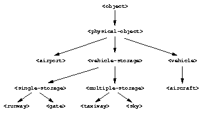

15.2 Objects that model an airport
We need to define classes that represent the objects in Figures 15.1 and 15.2. Note that the application displays information about the path of an aircraft from gate to sky and sky to gate; the aircraft stops at the gate and does not enter the terminal itself. Therefore, we do not need to define a terminal class. Our design includes these airport classes:
<airport>, <gate>, <taxiway>, <runway>, <sky>, <vehicle>, <aircraft>
A vehicle is any object that is self-propelled. Aircraft are vehicles that are capable of flying. In our design, the sky around the airport, the gates, the taxiways, and the runways each keep track of each aircraft as the latter moves from the sky to the gate and back to the sky again. One common attribute of the sky, gates, taxiways, and runways is that each of them can hold an aircraft, or more than one aircraft. Because these objects can hold vehicles, we can think of them as containers. Our design uses this class to represent all types of containers:
<vehicle-storage>
In our design, containers are connected to other containers. In the airport diagram in Figure 15.1, gate A1 is connected to taxiway Echo, which is connected to runway 11R-29L. We can use a slot in the <vehicle-storage> class to model these connections.
Since some containers can hold only one aircraft, whereas other containers have more complex behavior, our design includes two subclasses of <vehicle-storage>:
<single-storage>, <multiple-storage>
Instances of <single-storage> may hold a single aircraft regardless of the direction of travel. Instances of <multiple-storage> may hold more than one aircraft, and each direction is treated separately. For example, <gate> is a subclass of <single-storage>, and <sky> is a subclass of <multiple-storage>.
All subclasses of <vehicle-storage> must comply with the vehicle-storage protocol. In particular, designers of <vehicle-storage> subclasses must ensure that the subclasses either inherit or define methods for all the key vehicle-storage generic functions.
Certain classes — such as the time and position classes — represent intangible concepts. Other classes — such as airports, gates, runways, and aircraft — represent physical objects. It may be useful to make that distinction in our classes, so we define a class from which all physical objects inherit:
<physical-object>
 |
Figure 15.3 shows the inheritance relationships among the classes that represent physical objects.